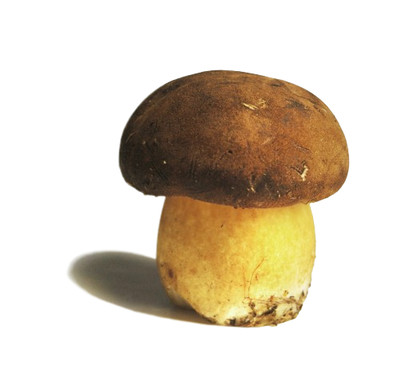

O gljivama
Što su gljive? Gljive (Fungi) su organizmi bez klorofila te zbog svoje jedinstvene građe ih ne svrstavamo ni u biljnu skupinu ni u životinjsku, nego one pripadaju svojoj vlastitoj skupini koju nazivamo gljive. Predpostavlja se da u svijetu postoji oko milijun i pol vrsta, od kojih je znanstveno opisano tek oko 70 000. Tijelo gljive može biti u raznim oblicima, a kao nama najpoznatije su one koje imaju stručak i klobuk.
Kako se hrane gljive? Gljive svrstavamo u heterotrofne organizme jer ugljikohidrate koji su joj potrebni za život uzimaju iz organskih tvari, stoga uspijevaju i u mraku. Još ih zovemo prirodnim razgrađivačima.
Zašto baš gljive? Mnoge se gljive koriste kao jestive, ljekovite, psihoaktivne, halucinogene, a mnoge su i otrovne. U raznim plemenima i kulturama se gljive smatraju svetima i neke od njih se upotrebljavaju u ritualima u kojima sudionici upadaju u stanje "proširene svijesti". Jestive gljive koristimo u svojoj prehrani zbog više razloga, uz to što imaju prepoznatljiv miris, gljive su bogate proteinima, mineralima, anioksidansima i vlaknima. S toga možemo zaključiti da su ujedno i ljekovite jer sadrže toliko korisnih tvari koje nam mogu poboljšati zdravlje i ojačati imunitet.
Vrste gljiva u Hrvatskoj
Predpostavlja se da u Hrvatskoj obitava oko 4 500 vrsta gljiva. U nastavku čemo nabrojati neke najčešće i nama najzanimljivije:
- Raspucali ili proljetni vrganj (Boletus aestivalis)
- Crnogorični ili ljetni vrganj (Boletus edulis)
- Borov vrganj (Boletus pinophilus)
- Carska blagva (Amanita caesarea)
- Crna truba, trubica ili trubača (Craterellus cornucopioides)
- Lisičarka ili lisičica (Cantharellus cibarius)
- Rujnica (Lactarius deliciosus)
- Sunčanica (Macrolepiota procera)
Galerija slika
Raspucali ili proljetni vrganj (Boletus aestivalis) ima baršunast klobuk raznih nijansi smeđe boje, veličine između 10 i 20cm. Osnovna mu je karakteristika ta što mu je klobuk raspucan, naročito po suhom vremenu, zbog čega se jasno vide sitne mrežaste raspukline. Stručak mu je bijeli ili svjetlo-smeđi, sav prekriven mrežicom, a meso je bijelo, debelo i čvrsto. Obično raste u skupinama, i to najčešće ljeti u bjelogoričnim šumama u blizini kestena, breze ili graba. Moguće ga je zamijeniti s drugim vrstama vrganja, koji su svi odreda jestivi, jedino treba obratiti pozornost na stručak koji po sebi ne smije imati dijelove crvene boje.
Kod crnogoričnog ili ljetnog vrganja (Boletus edulis) klobuk je polukuglast i zaobljen, blijedo smeđe do kestenjaste boje. Stručak je kod mladih primjeraka lukovičasto trbušast, a kasnije postaje vitkiji, bjelkaste ili žućkaste boje. Smatra se jednom od najkvalitetnijih jestivih gljiva koja se može pripremati na najrazličitije načine, pa i sušiti. Raste u ljeto i jesen u crnogoričnim i bjelogoričnim šumama, najčešće uz hrast ili bukvu. Od sličnih gljiva, potrebno je paziti da se ne zamijeni s nejestivom, gorkom žučarom (Tylopilus felleus).
Borov vrganj (Boletus pinophilus) ima mesnat i taman klobuk kestenjaste do crnosmeđe boje, a stručak je tamne crvenkastosmeđe boje s jasno vidljivom mrežicom. Uglavnom raste u proljeće i jesen ispod borova, a u našim krajevima većinom u bukovim šumama. Budući da je rijedak, u Hrvatskoj je zaštićen pa ga berite tamo gdje raste u većim količinama.
Carska blagva (Amanita caesarea) ima gladak klobuk širine do 15 cm, žuto narančaste do narančasto crvene boje. Kod mlade je gljive klobuk polukuglastog oblika, dok se kod starijih primjeraka raširi i dobije češljaste nabore na rubu. U početku je obavijen bijelom ovojnicom, koja u rijetkim slučajevima može ostati i kasnije u vidu krpastog ostatka. Listići su gusti i slobodni, žute boje, dok je stručak žućkaste boje s narebanim vjenčićem koji pri dnu prelazi u gomoljasto zadebljanje okruženo bijelom ovojnicom. Meso je bijelo, lagano žućkasto ispod klobuka, blagog i prijatnog mirisa. Blagva raste uvijek na istim mjestima u hrastovim šumama, na čistinama ili rubovima šume. Iako je prilično česta u nekim predjelima, kao što je Slavonija, inače je prilično rijetka zbog čega je zaštićena. Jedna je od najboljih jestivih gljiva, ali oprezno – njoj je slična otrovna ogoljela muhara (Amanita aureola) koja se od blagve razlikuje po listićima i stručku potpuno bijele boje.
Crna truba, trubica ili trubača (Craterellus cornucopioides) svojim tijelom podsjeća na trubu, po čemu je i dobila ime. Ona je ljevkastog oblika sve do početka stručka, tanka pri dnu pa sve šira prema gore gdje završava nepravilnim obodom. Iznutra je sivosmeđe do sasvim crne boje i prekrivena sitnim ljuskicama, dok je izvana siva i glatka. Usto, stariji primjerci mogu biti žilavo nabrani. Meso joj je crnkasto i prilično žilavo, ali blagog mirisa i prijatnog okusa. Najčešće se koristi kao začinska biljka, osušena i samljevena u prah, kao dodatak za juhe, variva ili gulaše. Raste pretežno u bjelogoričnim šumama na vlažnijim mjestima, obično ispod bukve raspršena u velikom broju. Zbog boje, moguće ju je zamijeniti za pepeljastu lisičicu (Cantharellus cinereus), ali ona je jestiva gljiva pa nema opasnosti.
Lisičarka ili lisičica (Cantharellus cibarius) jedna je od najpoznatijih gljiva naših krajeva. Kod mlade je lisičarke klobuk konveksnog oblika, a kasnije postane ljevkast, nepravilno svijenog ruba širine između 6 do 10 cm. Upečatljive je blijedožute do izrazito žute boje poput žumanjca jajeta. Listići su rijetki i žilavi, nepravilno se račvaju i spojeni silaze niz stručak koji je u boji klobuka ili nešto bljeđi. On se stanjuje prema dnu te nema vidljivog prijelaza između klobuka i stručka. Meso joj je blijedožute boje, ali čvrsto i žilavo zbog čega je teže probavljiva, stoga ju je potrebno dobro prokuhati. Raste u crnogoričnim i bjelogoričnim šumama gdje je se može naći od sredine proljeća do kraja jeseni. Moguće ju je zamijeniti s friesijevom lisičicom (Cantharellus Friessi), koja je nešto manjeg rasta, ili blijedom lisičicom (Cantharellus subcibarius), no svi su ti varijeteti jednako jestivi. Potrebno je pripaziti na lažnu lisičicu (Hygrophoropsis aurantiaca) i zavodnicu (Omphalotus olearius), dvije otrovne gljive koje, za razliku od lisičarke koja raste na tlu, rastu na panjevima.
Mladi primjerci rujnice (Lactarius deliciosus) imaju konveksan klobuk koji se kasnije raširi i postane ulegnut. Uglavnom je narančasto-crvenkaste boje prošaran tamnijim koncentričnim krugovima, sa zelenom nijansom kod starijih primjeraka. Stručak je šuplji, cilindričnog oblika, s tamnijim udubljenjima sličnim rupicama. Meso, jednako kao i listići, na prerezu pušta narančasto mlijeko te s vremenom pozeleni. Ova gljiva raste od ljeta do kasne jeseni u crnogoričnim šumama, a s obzirom na stanište i karakterističnu narančastu tekućinu koju pušta prilikom prereza, teško ju je zamijeniti s drugim gljivama.
Sunčanice su gljive iz obitelji Agaricaceae koje svojim oblikom podsjećaju na suncobran. Velika sunčanica (Macrolepiota procera) ima klobuk okruglog oblika s jasno vidljivim ispupčenjima te stručak visok i do 30cm, s pomičnim prstenom ispod klobuka. Jestiv je samo klobuk jer je stručak pretvrd. Najčešće raste ljeti i u jesen u bjelogoričnim šumama, po rubovima šuma i po livadama. Njoj je slična otrovna sunčanica (Macrolepiota venenata) koja ima glatki stručak, a na prerezu ili oštećenim mjestima pocrveni. Kod kuštrave sunčanice (Macrolepiota rhacodes) klobuk je polukuglastog oblika prekriven debelom ispucalom kožicom smeđe do tamnosmeđe boje, lagano krpast na rubovima. Česta je gljiva u crnogoričnim i bjelogoričnim šumama, a kao i kod Velika sunčanice, jestiv je samo klobuk. Moguće ju je zamijeniti s otrovnom pilatovom (vrtnom) sunčanicom (Macrolepiota rhacodes) koja raste izvan šuma na humusnom tlu, a ima koncentrično postavljene čehice na klobuku. Česta je i zamjena sunčanice sa zelenom pupavkom (Amanita phalloides) – radi se o jednom od najpoznatijih otrovanja koje mogu završiti kobno.